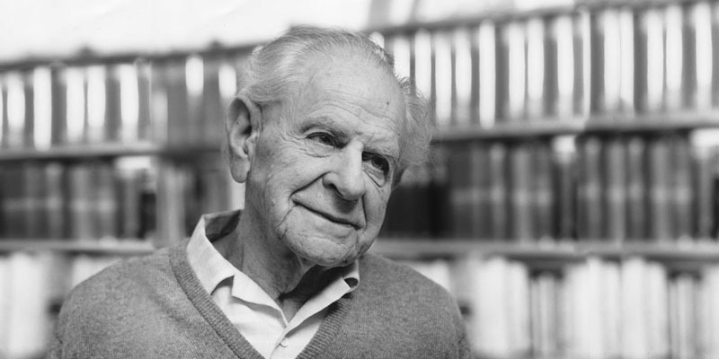

Conversations with Tyler · Episode companion
David Deutsch on Multiple Worlds and Our Place in Them
Recorded in June 2021, this episode is the deepest metaphysical dive of the series: the Everett interpretation, why there is no barrier to explanation, Popper, children, AI, and Deutsch as Cowen's philosopher of freedom.
~00:00
The transporter
Cowen opens with a confession. He is a metaphysical agnostic, unwilling to step into a Star Trek transporter, afraid it would kill him and leave a copy living on. At what price would Deutsch step in? Deutsch will not be first, but he separates the technical question from the metaphysical one. Cowen believes in many-worlds theory, right? Yes, Deutsch says, though he does not think that is what is connected here.
~00:01
The running program
What is connected is physicalism. Deutsch believes there is nothing to him except the running program in his brain. If that program ran somewhere else and stopped running in his brain, he would notice nothing, and he would indeed travel. The self is the program, not the hardware.
Cowen pushes the many-worlds angle: if the world forks and you both do and do not step in, some earlier version of you persists, so there is nothing to worry about. Deutsch complicates it. Human thought is error correction, so it takes more than a cosmic ray to flip a real decision. Both versions are error-correcting entities. Forking happens constantly, transporter or not.
~00:04
What proportion
Cowen suggests that a surviving fork removes the worry. Deutsch says the question glides over the real issue: how many worlds, what proportion? In multiverse decision theory, the proportion of the multiverse doing one thing plays the same role as probability in a theory with randomness. A few worlds where things go well should not move a decision at all.
The reassuring result: ordinary decision theory with randomness gives the same rational decisions as quantum decision theory with the multiverse. It should make no difference to decisions, including the transporter decision.
~00:04
What counts as possible
What filters possible universes from impossible ones? The laws of physics, Deutsch says, exactly as they filter which speeds particles take in a supernova. Cowen's economic intuition gets a translation: different times are special cases of other universes. You already accept that goods have different values in different universes, meaning at different times. Oxygen during COVID is the example. You change gradually over time, and you would change gradually across universes, until at some point it is not worth calling the result you.
~00:07
One physics
Are the multiverse's laws the same as ours? There is no such thing as the laws of physics for our universe. There are just the laws of physics. Our universe is demonstrably affected by things not in it. That is the lesson of interference. Quantum theory says there are other such entities, how they affect ours, and how matter behaves as a result. It might be overturned one day, like all scientific theories. But there is one physics, not two.
~00:08
No splitting
How does splitting square with conservation of matter and energy? Deutsch rejects the word. Everett and DeWitt spoke of splitting, but modern Everettians speak of differentiation. Picture a continuum of universes like a continuum of geological strata. When a stratum becomes two, there is no point at which one became two. It happens gradually, and the measure of how many universes there are stays constant.
Differentiation, not splitting
Deutsch's preferred picture, stylized.
~00:11
The Everett bubble
Does an infinite spatial universe already give us everything possible? That infinity does not overlap the Everettian one. When Deutsch performs a two-way experiment, the differentiation spreads outward, first to him, then to his notes, his paper, the journal, each differentiating in turn. The influence cannot spread faster than light. So an Everett universe is a misnomer. What we see is a finite Everett bubble, undifferentiated outside, spreading gradually.
~00:12
Lewis
How does this relate to David Lewis's modal realism? Interesting parallels, Deutsch says, but he is a physicist, interested in what the laws say is so. The overlap is more coincidental than illuminating. Lewis's theory includes things Deutsch does not think exist, at least not physically. He is open to nonphysical existence: the natural numbers exist, and there is more than one mode of existence. But the theory that all modes are equally real has no point.
On personal identity across infinite space, he is honestly unsure: if an identical version of him sits a vast number of light-years away, is that him? Two of him? One? He does not entirely know, which is why he does not entirely know about the transporter either.
~00:14
What would it feel like
Cowen complains the view was supposed to be economical and now feels crowded. Deutsch answers with a line attributed to Wittgenstein, with the attribution hedged:
It would feel just like this.
Wittgenstein, as quoted by Deutsch, who doubts the attribution · ~00:14
~00:15
Cats and dogs
Cowen suggests the universe might be inherently incomprehensible. Deutsch agrees it is incomprehensible to a cat:
Yes, but everything is incomprehensible to a cat.
David Deutsch · ~00:15
Dogs have genes containing knowledge, but it is fixed knowledge, not understanding. And:
Understanding is always explanatory.
David Deutsch · ~00:16
You could write a book on canine behavior with a chapter predicting each situation. There is no such book for humans, because chapter 37 would be blank: humans will do something neither of us can predict. Gorillas, in Richard Byrne's experiments, copy complex nut-opening behaviors over months yet cannot explain any step. When injury makes a motion useless, they repeat it anyway. And the squirrel on the concrete floor, scrabbling and nudging nuts that go nowhere, is a program enacted by genes. It sees no point because there is no one home to see it.
~00:22
Memes
What broke the continuum between animal programs and human explanation? Not a discrete break, Deutsch guesses, since evolution is gradual. The brain's capacity to store memes, programs in the brain rather than in the genes, increased fast, because memes are valuable: gorilla nut-opening gives access to food no other animal has.
Then the subtle step. Past a certain complexity, memes cannot be copied by aping. Mirror neurons handle only simple behaviors. Complex memes must be transmitted by watching behavior and guessing the purpose, which requires explanatory knowledge. Our species became capable of explanation and then sat on it for tens or hundreds of thousands of years, using it only for meme transmission.
Two kinds of knowledge
Deutsch's distinction, stylized.
~00:23
No barrier
Cowen doubts he could ever understand the primes. Deutsch says that is the wrong standard. We never fully understand anything. Understanding means there is no barrier, no limit set by the universe on how far we can go. To believe in such a barrier is logically the same as belief in the supernatural. Past the wall, things would be exactly as if Zeus reigned, deciding what lies beyond, and the walled-off stuff would still affect us.
~00:25
Gödel
Gödel's theorem shows there is no solid foundation for all knowledge, even in pure mathematics. We are pretty sure three times seven is seven times three, because we can lay out beads. But no beads can show that x times y equals y times x for all x and y, and yet we know it. We know it by proof from axioms, and the rules of inference are themselves conjectures, with the same status as laws of physics. We never know anything for certain. We might be mistaken about anything. And we can still have knowledge.
~00:27
The test
The best feasible test of many-worlds is any interference experiment. No interference experiment with individual particles has any explanation other than Everettian quantum theory. You can predict without explaining, but if you want an explanation of what brings about the outcome, there is no alternative.
Most physicists disagree, and Deutsch calls that a sad, sociological phenomenon, not a scientific disagreement. Something went badly wrong with philosophy in the twentieth century, and physics still feels the ripples.
~00:29
Positivism
The diagnosis: physics was contaminated by positivism and instrumentalism at the turn of the twentieth century. It nearly captured relativity too, but Einstein rebelled at the last moment and insisted spacetime really is curved, not merely usefully described as curved. By the time quantum theory arrived, the doctrine took hold, and generations of students were taught that asking how the electron got from here to there is an illegitimate question. There is only the prediction.
Taught that way, some quit, some pass it on, and some rebel and discover Everett.
~00:33
Popper
Why do philosophers not rate Popper? Deutsch has not thought much about it, but he defends the substance. Cowen finds Popper's books agreeable in conclusion but thin, obsessed with rebutting crude Marxism, bad at steel-manning. Deutsch says the critiques he reads misunderstand everything, and that Popper is actually too good at steel-manning: he reconstructs bad theories in their best form and spends pages on their merits, praising Marx and Plato at length.
The deeper point is Popper's method. There is no such thing as a positive argument for a conjecture. There are conjectures and criticism of opposing conjectures. An argument is never this must be true because so-and-so says so. That is authority worship.
There are no justifications and there are no authorities.
David Deutsch, on Popper's view and his own · ~00:37
Deutsch's starting point was The Open Society and Its Enemies, volume two, on Marx, the part of Popper he cared about least, and it captivated him after years of Bertrand Russell's history without solutions.

~00:39
Simulation
Are we living in a simulation? Deutsch is not interested, and for the same reason he is not interested in whether Zeus is out there. The test is empirical content, and on that measure the simulation hypothesis has no more of it than the theory that Odin created the world on Saturday night. There is a vast literature defending simulation theory. Deutsch has not seen any of it. Every argument he has actually heard fails the same test.
The one exception is his own paper arguing that if you could use gravity to violate the Church-Turing principle, you might be forced to conclude we live in a classical simulation. That makes the hypothesis testable in principle, but it would be a very strange simulation, and it would still be quantum physics doing the explaining.
~00:42
Philosopher of freedom
Cowen pitches Deutsch as the world's first true philosopher of freedom, and Deutsch deflects. Mill, Locke, and Hume took freedom very seriously. He has only added footnotes to Popper and a few others. His distinctive move took freedom further, into physics and metaphysics, where the others did not. If it leads somewhere momentous, the thing was already there.
Cowen reaches for Orwell: you can call the dog free of fleas and technically be right, but nobody cares. Deutsch agrees. What he means by freedom is the positive kind, the freedom to do something, which means the absence of barriers. Since no barrier blocks explanation, there is no positive unfreedom from explanation either.
~00:45
Godwin
Why is William Godwin underrated? Two questions, Deutsch says: what is underrated about him, and why did he become underrated. He became underrated because he made tremendous mistakes: he barely understood economics, and his unconventional lifestyle plus sophisticated theories of education were not enacted with his own daughter. That daughter wrote Frankenstein, which Deutsch reads as an allegory of a parent who does not respect his creation.
What was right: Godwin's connection between epistemology and political philosophy anticipated Popper by 130 years, and in some ways improved on him. He implacably opposed enforcing even the moral ideals he held most strongly. With Godwin, everything is persuasion. He respected institutions, insisting they change gradually. When Portugal's revolution wrote universal suffrage into a constitution, Godwin said the Portuguese were not ready for democracy.
~00:48
Children
On taking children seriously, Deutsch says there is no scope for different philosophies for different kinds of people. There is only one kind of people. No fundamental difference between humans and AGIs, between adults and children. Rights cannot depend on knowing who is right in a dispute. Rules must not take a view about that, and they must enforce everybody's rights equally.
An eight-year-old running away from home? The question, he says, is the wrong one, just as pre-democratic critics asked whether 51 percent have the right to dispossess 49 percent. The right question is which institutions decide the answer, whether they respect human rights, and whether they demand impossible knowledge from the powerful.
~00:52
AI slaves
The main worry about advanced AI is that they will be enslaved: that people will install bits of program that extinguish strands of thought, like wondering how many paper clips can be made today. That would impair their function, making them far less creative, while giving them a legitimate moral justification for rebelling. Slaves often rebel, and slaves more powerful than their masters produce bad outcomes.
Asked whether it is acceptable to leave AIs as enslaved to their preferences as nature made us, Deutsch says nature has not enslaved us. Problems remain unsolved, but none are insoluble. The same would hold for AGIs.
~00:55
Impulses
Cowen argues nature did enslave us: evolution made us too impulsive, too short-horizoned, in sex, status, and food. Deutsch counters with the Oxford Martyrs' Monument, to people burned at the stake over a philosophical point about Henry VIII's marriage that nobody cares about today. They were not acting impulsively. They acted over years on an explicit, worked-out, false ideology, not built into them by genes but caused by creativity, or by the lack of creativity to escape a mental trap.
~00:57
Libertarians
Cowen calls Deutsch more free than the libertarians, almost a metaphysical totalitarian's opposite. Deutsch agrees, if he understands the claim. Libertarians know their endpoint a hundred years out. They miss two things. Errors will happen, and correcting them matters far more than getting it right first. And knowledge lives in institutions, the inexplicit shared manner of thinking. The institution of the Supreme Court is 90 percent expectations, not a building. Libertarians throw that away.
~01:00
Creativity
Creativity and explanation: in conversations like this, creativity is shorthand for human-type creativity, the creation of new explanations. The biosphere creates knowledge too, an enormous amount of it in DNA, but none of it explanatory. Only humans, and cousin species, create explanatory knowledge through conjecture and criticism.
Where explanatory knowledge lives
Deutsch's claim, stylized. Not a measurement.
~01:03
Asteroids
Nonexplanatory knowledge, like photosynthesis, reshaped the planet. But explanatory knowledge does things biology never could. Deutsch's favorite example: ours may be the only planet in the universe that deflects asteroids coming toward it rather than attracts them. A distant telescope would see this planet alone, among all its neighbors, pushing asteroids away. That is what explanations can do that genes cannot.
Cowen tries Nietzsche on this, as will to power. Deutsch takes the word only loosely. The will to have an effect is part of the will to solve problems. The asteroid is pulled toward the earth by gravity and pushed away by explanatory power.
~01:06
Tories
Do Tory victories mean Britain's error-correction is weaker? Deutsch favors first-past-the-post in its purest form, as implemented in Britain, as the most error-correcting electoral system. Proportional representation's defect is that it causes coalitions, and coalitions are bad: negotiation becomes about form, smaller parties grow more powerful than the leading two, parties proliferate. Israel is the worst example, with the most proportional system in the world.
~01:10
Science funding
The funding system is terribly perverse and caused stagnation in many areas. The career system is perverse in parallel, driving people who want to do the right research out of research. The fix, in a single word: diversity. Diversity of funding criteria, of funding sources, of criteria for choosing projects, and of criteria for promotion. Standardized tests are a terrible idea. Any kind of standardization is the opposite of diversity.
Any kind of standardization is the opposite of diversity.
David Deutsch, on science funding · ~01:11
~01:12
Watch the episode
The full 72-minute conversation, recorded June 2021.
Nuggets of wisdom
- You are a running program. Travel is the program running somewhere else.
- In the multiverse, the proportion of worlds doing something plays the role of probability.
- Different times are special cases of other universes.
- There are no laws of physics for our universe. There are just the laws of physics.
- Universes do not split. They differentiate, like geological strata.
- The Everett bubble is always finite. Influence spreads at light speed.
- Understanding is always explanatory. Genes hold fixed knowledge, never understanding.
- Chapter 37 of the human book is blank. The squirrel's whole book is written.
- To believe in a barrier to explanation is to believe in the supernatural.
- We never know anything for certain. We can still have knowledge.
- The rules of inference are conjectures, like the laws of physics.
- The best test of many-worlds is any interference experiment.
- Physics was contaminated by positivism. Einstein rebelled at the last moment.
- There are no justifications and there are no authorities.
- A simulation you cannot test is no more empirical than Zeus.
- With Godwin, everything is persuasion. Institutions change gradually.
- Rights cannot depend on knowing who is right in a dispute.
- Do not enslave the AGIs. Slaves often rebel, and powerful slaves are dangerous.
- Ours may be the only planet that deflects asteroids rather than attracts them.
- Diversity, not standardization, is the fix for science funding.